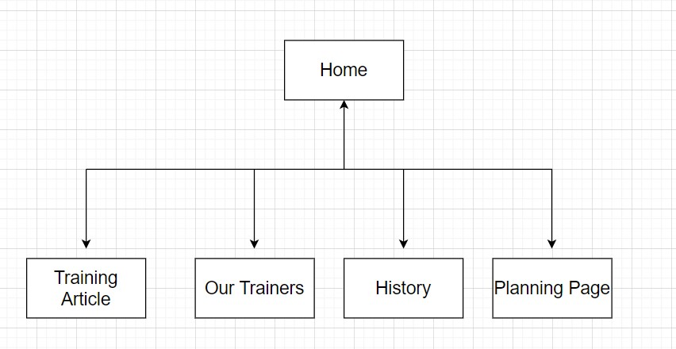

Milooni Shailen Yagnik & login:- jc736071
Training Zone has been in business for more than 150 years. They specialize in training IT and organizational skills for individuals. The company's history, few sample posts, contact information, and links are all available on this website. The website's goal is to boost Training Zone's sales by advertising the company's programs and encouraging people to sign up for them online, resulting in more new and repeat clients.
Other advertising will be consistent for a period of 3 months (except for including the new web site), so that any increase in sales should be attributable to the site. At the end of this 3 month period (and during), the number of new customers will be counted and compared to the previous 3 months.
Local residents, mostly between the ages of 28 and 50 form the majority of our current audience (mature age job seekers), and this is who the site is aimed at.
